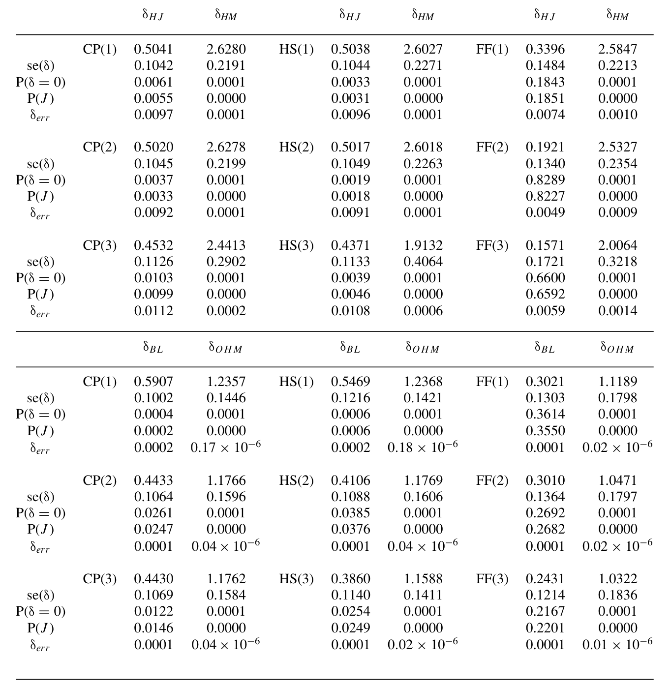
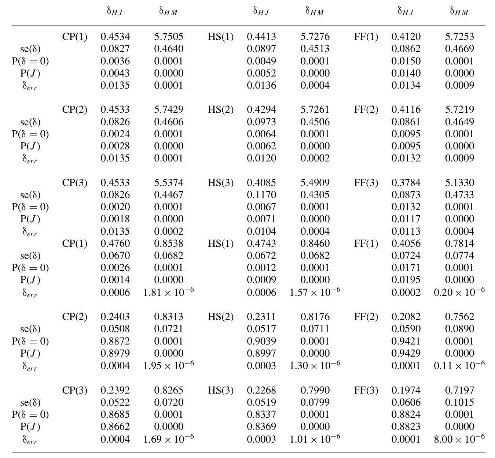
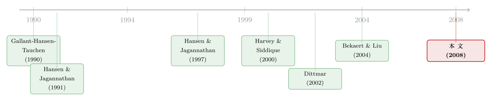

定价核的「测谎仪」，为什么要请进期权？
本文读的是 Chabi-Yo (2008, Review of Financial Studies)：Hansen-Jagannathan 那把广为人知的方差下界，只用到收益的前两阶矩，看不见偏度与峰度，也看不见被市场明码标价的方差风险。作者的办法出人意料地直接——把「波动率合约」这种衍生品请进资产空间，于是高阶矩和方差风险溢价就自动进入了下界。由此得到三条更紧的方差下界（UCHM / HM / OHM）和两个更狠的距离测度；实证里，这把更灵敏的尺子一量，那些原本「表现良好」的非线性定价核，开始解释不动资产和衍生品的收益了。
1 引言：一把只能看两阶矩的尺子
做实证资产定价的人，大概都用过 Hansen 和 Jagannathan (1991，下称 HJ) 的那条方差下界。它的逻辑朴素得近乎优雅：任何能给资产正确定价的随机贴现因子 (stochastic discount factor, SDF，又称定价核 pricing kernel)，它的波动率都不能太小——给定一组资产的均值和协方差，SDF 的标准差必须超过某个值。于是平面上画出一条「碗」形的边界，谁家的模型落在碗外，谁就出局。
这把尺子用了三十年，几乎成了模型的体检标准。可它有一个一直被默许的局限：它只用到资产收益的前两阶矩。HJ 下界、乃至 HJ (1997) 的距离测度，本质上都是在「均值—方差」这张二维平面上做文章。
问题是，近二十年的资产定价研究早就越过了二维。Harvey 和 Siddique (2000) 把 条件偏度 (conditional skewness) 写进了定价；Dittmar (2002) 进一步把 峰度偏好 (kurtosis preference) 也算了进来。市场会给「下行的不对称」和「肥尾」开价——这一点，几乎已是共识。
这就埋下了一个尴尬：当我们用一个只看两阶矩的下界，去检验一个靠三阶、四阶矩吃饭的定价核时，这把尺子其实「看不见」它最该看的那部分风险。模型轻轻松松落进碗里，并不是因为它对，而是因为尺子瞎了一只眼。
于是一个自然的问题浮出水面：能不能造一把同时看得见偏度、峰度，甚至看得见「方差本身被定价」的尺子？这正是本文要做的事。（关于定价核如何在不同状态下「换一副面孔」，可参见《定价核的两副面孔》。）
2 关键一步：把「波动率合约」请进资产空间
接着，真正关键的一步出现了，而且朴素得让人拍大腿。
GHT (Gallant, Hansen, and Tauchen, 1990) 早就指出：投资者会用 条件信息 (conditioning information) 去构造投资组合，从而把下界做得更紧。本文承接这个思路，但多走了一步——它假设投资者不只能交易基础资产，还能交易这些资产上的衍生品。
具体地，作者引入了一个叫「波动率合约 (volatility contract)」的支付：
$$ \vartheta_{t+1} = r_{t+1}^{(2)}, \qquad \text{components of the form } r_{it+1}\,r_{jt+1},\; i\le j. $$
也就是说，它的每个分量是两两收益的乘积。只有一个风险资产时，它干脆就是 \(\vartheta_{t+1}=r_{t+1}^2\)——一份「平方收益」的支付。这恰恰就是方差互换 (variance swap) 一类波动率衍生品的内核。任何一个普通衍生品 \(h(r_{t+1})\)，都可以近似地用资产收益和这份波动率合约线性张成：
$$ h(r_{t+1}) \;\approx\; E_t h(r_{t+1}) + a_t\,[\,r_{t+1}-E_t r_{t+1}\,] + b_t\,[\,\vartheta_{t+1}-E_t \vartheta_{t+1}\,] + \eta_{t+1}, $$
残差 \(\eta_{t+1}\) 不被定价（式 1）。这句话的潜台词很重要：只要你能给波动率合约定价，你就能给一大类衍生品定价。
为什么非要请进这位「波动率合约」？因为有大量证据表明它在市场上被明码标价。Bakshi 和 Madan (2000) 证明，波动率合约的价格可以从一篮子价外 (out-of-the-money, OTM) 欧式期权里复原出来；Bondareko (2004) 更发现，方差风险的风险溢价为负、而且在经济上极大，是解释对冲基金业绩的关键。换句话说，市场对「方差」这件事有强烈的态度，而 HJ 的两阶矩尺子完全把这份态度漏掉了。
直觉上：augment（扩张）资产空间，等于给定价核的「测谎仪」多接了几根电极。原来只测心跳（均值）和血压（方差），现在连脑电波（偏度、峰度）也一起测了。被测者再想蒙混过关，就难了。（VIX、方差风险的定价，另见《恐慌指数也能定价》。）
3 模型：从 GHT 下界到 CHM 定价核
下面进入本文的理论核心。我们一步步把它拆开。
第一步，定义前四阶条件矩。 给定 \(t\) 时刻的信息集 \(I_t\)，记
$$ \mu_t = E_t(r_{t+1}),\qquad \sigma^2_t = E_t\,r_{t+1}(r_{t+1}-E_t r_{t+1})', $$ $$ s_t' = E_t(\vartheta_{t+1}-E_t \vartheta_{t+1})\,r_{t+1}',\qquad \kappa_t = E_t\,\vartheta_{t+1}\vartheta_{t+1}'. $$
这里 \(\mu_t,\sigma^2_t\) 是熟悉的条件均值和条件方差；\(s_t\) 度量 共偏度 (co-skewness)（Harvey-Siddique 意义上的），\(\kappa_t\) 是四阶矩，也就是 共峰度 (co-kurtosis)。关键在于：前两个矩刻画线性风险，后两个矩刻画非线性风险。
第二步，求最小方差定价核。 作者考虑那些能同时给债券、资产、以及波动率合约正确定价的可行定价核集合 \(F(m_t,p_t^\vartheta)\)，并在其中求方差最小的那个：
$$ \min_{m\in F(m_t,\,p_t^\vartheta)} \sigma^2(m\,|\,I_t). $$
解出来，就是 Proposition 1 的「条件高阶矩定价核」（CHM）：
其中 GHT 项 \(m_{GHT}=\beta_t(r_{t+1}-\mu_t)+m_t\)，而那个「正交残差」是
$$ \varepsilon_{t+1} = \vartheta_{t+1}-E_t\vartheta_{t+1} - s_t'\,(\sigma^2_t)^{-1}(r_{t+1}-\mu_t). $$
这一步的精妙之处在于：\(\varepsilon_{t+1}\) 是把波动率合约对资产收益做回归后剩下的残差——它纯粹携带高阶矩信息，与一阶风险正交。于是 CHM 定价核被干净地劈成两块：一块是老的 GHT 两阶矩部分，一块是 \(\gamma_t'\varepsilon_{t+1}\) 这个高阶矩补丁。
第三步，理解 \(\gamma_t\) 的含义。 参数 \(\gamma_t\) 正比于一个量，作者称之为「纯波动率合约风险溢价 (pure volatility contract risk premium)」：
$$ p_t^\vartheta-\underline{p}_t^\vartheta = m_t\Big(E_t^{*}\vartheta_{t+1}-E_t\vartheta_{t+1}\Big) - s_t'\,(\sigma^2_t)^{-1}(p_t-m_t E_t r_{t+1}), $$
其中 \(E_t^{*}\) 是风险中性测度下的期望（式 7）。它由两块构成：第一块是波动率合约本身的风险溢价，第二块正比于基础资产的风险溢价。当收益的非线性（偏度）不被定价时，这个差为零——
这正是本文最漂亮的「嵌套」结论（Corollary 2）：当纯波动率合约风险溢价为零时，CHM 定价核的条件方差恰好退回到 GHT 下界。 也就是说，新尺子不是另起炉灶，而是把老尺子完整地包在里面——偏度一旦不重要，它自动塌缩成旧的两阶矩世界，甚至进一步退化成 CAPM 的二次定价核（Harvey-Siddique、Dittmar 用的那种）。
4 三条下界：UCHM、HM、与最优的 OHM
有了 CHM 定价核，作者把它「无条件化」，得到三条层层递进的方差下界。
UCHM 下界（式 12）。把条件投影换成无条件投影，得到
$$ \sigma^2_{UCHM} = \sigma^2_{GHT} + E\Big[\gamma_t'\big(\sigma^2_{\vartheta t}-s_t'(\sigma^2_t)^{-1}s_t\big)\gamma_t\Big]. $$
读这条式子，整篇文章的「核心」就立住了：新下界 = 旧的 GHT 下界 + 一个非负的高阶矩修正项。第二项是前四阶矩与纯方差风险溢价的函数；它恒为正，意味着新下界永远不低于旧下界——尺子只会更紧，不会更松。偏度不被定价时，第二项归零，UCHM 退回 GHT；若再把条件矩换成无条件矩，就得到 HM 下界，并在偏度不被定价时退回经典的 HJ 下界。
OHM 下界（式 21）。条件高阶矩很难算准，于是作者用「缩放收益 (scaled returns)」的办法——把收益和残差分别乘上一个条件变量 \(z_{1t},z_{2t}\in I_t\)，再去求让下界最大的那个缩放。这是一个变分问题：
$$ \sigma^2_{OHM} = \sup_{z_t\in I_t}\,\sigma^2\!\left(m,\,z_t' g_{t+1}\right),\qquad g_{t+1}'=(r_{t+1}',\,\varepsilon_{t+1}'). $$
解出来的最优缩放 \(z_t^{*}\)（Proposition 4）给出一条由两块组成、且每块都为正的下界。OHM 有三个讨喜的性质：它是有效的（最优地榨干了条件信息）；它对条件矩的设定误差稳健——哪怕你用错了条件均值、方差、偏度、峰度的代理，它依然是真实定价核方差的一条下界；它还能反过来做诊断，检验前四阶条件矩是否设定正确（在衍生品价格设定正确的前提下）。
这三条下界把已有文献干净地收编了：当偏度不被定价、\(p_t^\vartheta=\underline{p}_t^\vartheta\) 时，OHM 塌缩成 Bekaert 和 Liu (2004) 的最优缩放下界（式 23），后者只用前两阶矩、且只用资产支付不用衍生品。作者也讨论了与 Ferson-Siegel (2001, 2003) 边界、以及 Snow (1991) 用 Hölder 不等式得到的下界之间的异同——但反复强调一点：唯有本文的下界，对收益的均值、方差、偏度、峰度有清晰的结构解释，而 Snow 的下界没有。
5 距离测度：不只是「碗有多大」，还有「离碗多远」
下界回答的是「合格定价核的方差至少有多大」；距离测度回答的是「一个不合格的模型，离合格有多远」。仿照 HJ (1997)，作者提出了两个新距离：纳入高阶矩的 HM 距离（偏度不被定价时退回 HJ 距离），以及用缩放收益得到的最优 OHM 距离。它们的角色，就是给候选定价核的「误差」称重——而且现在这杆秤能称出非线性的那部分误差。
6 实证：旧定价核开始「看走眼」
接着是实证。作者用 Bekaert-Liu (2004) 的计量模型刻画矩，再用 标普 500 波动率指数 (VIX) 来度量方差风险，并在两类资产上做检验。
第一类是对冲基金指数。Agarwal 和 Naik (2004) 早就发现，大量股票型对冲基金策略的收益形态，活像在市场指数上「卖出一份看跌期权」——天生带着非线性的尾部风险。这正是两阶矩尺子最容易漏看的地方。

Table 2: also shows the maximum expected return error for a portfolio of
第二类是行业组合，这是检验候选定价核的经典试验场（Dittmar, 2002 用过）。作者还把这些定价核做了时变扩展。

Table 6: also shows the maximum expected return error for a portfolio of
我手头这份正文在进入实证表格前被截断，因此我不在这里复述任何具体的系数或 t 值——本文摘要给出的定性结论是确凿的：一旦把高阶矩与方差风险溢价的影响纳入，现有的定价核在解释资产与衍生品收益上遇到了明显困难。换句话说，过去靠两阶矩尺子「过关」的模型，在这把更灵敏的尺子下露了馅。这与论文标题里那个朴素的承诺——「Theory and Evidence」——首尾呼应。
为什么会这样？因为方差风险溢价为负且极大（Bondareko, 2004），而这部分溢价独立于基础资产的风险溢价。旧尺子把它当成了「噪声」忽略掉，新尺子却把它当成了「信号」——于是同一个定价核，在新尺子下要解释的东西多了一大块，自然就吃力了。（关于偏度本身的横截面定价力，可对照《市场的下一步，藏在一万只股票的歪斜里》。）
7 文献脉络
把这条线捋一捋，故事其实很清楚。
最早，是 GHT (1990) 教会我们用条件信息去收紧下界，Hansen 和 Jagannathan (1991) 给出了那条家喻户晓的方差下界，又在 (1997) 补上了距离测度——这是「两阶矩世界」的三块基石。接着，一个自然的不满浮现：市场明明在给偏度、峰度开价，Harvey 和 Siddique (2000)、Dittmar (2002) 相继把高阶矩塞进定价核，模型越做越非线性。然后，Bekaert 和 Liu (2004) 把「最优缩放」这件事做到了极致——但仍困在前两阶矩里。

于是反转出现：本文站在这两条线的交汇处，问了一句「既然定价核已经非线性了，凭什么检验它的尺子还停在两阶矩？」——并用「请衍生品进资产空间」这一步，把高阶矩与方差风险溢价同时焊进了下界和距离。它既向下兼容（偏度不被定价就退回 GHT / HJ / BL），又向上延伸（多看见两阶矩看不见的风险）。这就是它在脉络里的位置：不是推翻 HJ，而是把 HJ 装进了一个更大的盒子。
评论与延伸（Q&A + 研究方向）
(a) 几个可能的疑问
Q：这和直接往定价核里加偏度、峰度项（如 Dittmar 2002）有什么区别？
Dittmar 是在设定一个含高阶矩的定价核去拟合横截面；本文是在构造一条下界/距离去检验任意定价核。前者是「造模型」，后者是「造尺子」。本文的尺子不依赖于某个特定模型设定，因此能拿来一视同仁地考问别人的模型——包括 Dittmar 自己的。
Q：「波动率合约」凭空多出来一种资产，会不会是作弊？
不算作弊，因为它在市场上真实可交易、且价格可观测：Bakshi-Madan (2000) 用一篮子 OTM 期权就能复原它的价格，Carr-Wu (2004) 用期权组合近似方差。本文的贡献恰恰是说明：只要你愿意把这份本就存在的价格信息用起来，下界就能更紧。漏掉它，才是浪费信息。
Q：UCHM 下界一定比 GHT 紧，这是「免费的午餐」吗？
数学上是的——式 (12) 的修正项恒为非负。但代价藏在估计里：UCHM 需要前四阶条件矩，一旦用半参数方法（如 GHT 的 SNP）把它们估过头，UCHM 反而可能高于真实下界，从而不再是合法的下界。OHM 的稳健性正是为了对冲这个风险而设计的。
Q：OHM 说它对条件矩误设「稳健」，这话能信几分？
它的稳健性来自缩放—变分的结构：OHM 取的是所有缩放里最大的那条下界，因此即便你用了错误的条件矩代理，得到的仍是真实定价核方差的一条合法下界（只是可能不够紧）。它保证「不冤枉」（不会误判合格模型为不合格），但不保证「不放过」。
Q：和 Snow (1991) 的下界到底谁更好？
作者明说二者是「互补而非替代」。Snow 要求定价核为正、并依赖期权价格 \(\pi(p^+)\)（实证中他不得不假设 \(\pi(p^+)=\pi(p)\)，从而丢掉了期权价格信息）；本文不要求正性，且下界对均值/方差/偏度/峰度有清晰的结构解释，Snow 的没有。
Q：实证里说「旧定价核解释不动收益」，会不会只是 VIX 这个代理选得不好？
这是一个真实的担忧。结论的强弱，部分取决于用 VIX 度量方差风险、用 Bekaert-Liu 模型刻画条件矩是否到位。如果换一种方差风险代理（如已实现方差、个股期权隐含方差），结论是否稳健，正文（截断部分）应有讨论——这也是读者复核时该盯住的地方。
(b) 几个可能的研究问题与提案
1. 把这套下界搬到公司债 / 信用市场。 【经济故事】信用利差天生肥尾、左偏——违约是典型的非线性事件，正是高阶矩唱主角的舞台。用两阶矩尺子检验信用定价核，几乎注定漏看尾部。 【可行性】中。需要公司债收益（TRACE）与信用衍生品价格（CDS、CDX 期权）来构造「信用波动率合约」。难点在于公司债期权市场薄、价格噪声大，波动率合约价格的复原不如股指干净。
2. 用外资持有人结构解释方差风险溢价的截面差异。 【经济故事】如果不同投资者群体对「方差」的厌恶程度不同，那么外资占比高的资产，其纯方差风险溢价 \(p_t^\vartheta-\underline{p}_t^\vartheta\) 可能系统性地不同。这把本文的「价格」参数 \(\gamma_t\) 与持有人异质性挂上了钩。 【可行性】中。需持有人层面持仓数据（如 13F、跨国的 TIC / 托管数据）+ 期权隐含方差。识别靠持有人结构的外生变动（如指数纳入、资本账户开放）。
3. OHM 下界作为「流动性/方差风险」的实时诊断。 【经济故事】OHM 能在不看资产价格的前提下，对前四阶条件矩做诊断。把它做成滚动指标，或许能在危机前捕捉到「方差被错误定价」的窗口。 【可行性】高。数据现成（指数期权 + VIX 历史），方法即本文 Proposition 4。挑战是把「下界被突破」翻译成可解释的预警信号。
4. 把「波动率合约」推广为「相关性合约」做多资产下界。 【经济故事】多资产时波动率合约的分量是 \(r_{it+1}r_{jt+1}\)，本身就含协方差/相关性信息。能否进一步把相关性互换 (correlation swap) 的价格用进来，得到一条对「相关性风险」敏感的下界？ 【可行性】低到中。理论上是本文框架的自然延伸，但相关性衍生品价格数据稀缺，实证落地难。
我的判断
这篇论文的贡献是「方法论级」的：它没有发明新的定价核，而是把检验定价核的尺子升了一级，并且升得极有分寸——所有旧下界（HJ、GHT、Bekaert-Liu）都作为偏度不被定价时的特例被干净地嵌套进来。这种「向下兼容、向上延伸」的结构，是好理论的标志。它把一个看似抽象的扩展（加高阶矩），锚定在一个可观测、可交易、可定价的具体对象（波动率合约）上，从而让扩展不流于空谈。
对识别/实证，我有两点保留。其一，整套下界的「锐度」高度依赖前四阶条件矩与方差风险溢价的估计质量；作者自己也承认 UCHM 在矩被估过头时会失效，OHM 的稳健性是用「不够紧」换来的——所以实证里下界到底紧了多少、紧得是否稳健，需要逐一对账。其二，方差风险用 VIX 单一代理，结论对代理选择的敏感性值得追问。
后续我最想看到的，是把这套框架直接对准含尾部风险的资产（公司债、对冲基金、波动率本身），看看那条「高阶矩修正项」在这些地方究竟能撑起多大的下界增量——如果增量在股指上不大、在信用市场却很大，那才真正坐实了「两阶矩尺子在哪里最瞎」。
参考文献
- Agarwal, V., and N. Y. Naik (2004). Risk and Portfolio Decisions Involving Hedge Funds. Review of Financial Studies 17, 63–98.
- Bakshi, G., N. Kapadia, and D. Madan (2003). Stock Return Characteristics, Skew Laws, and Differential Pricing of Individual Equity Options. Review of Financial Studies 16, 101–143.
- Bakshi, G., and D. Madan (2000). Spanning and Derivative Security Valuation. Journal of Financial Economics 55, 205–238.
- Bekaert, G., and J. Liu (2004). Conditioning Information and Variance Bounds on Pricing Kernels. Review of Financial Studies 17, 339–378.
- Bondareko, O. (2004). Market Price of Variance Risk and Performance of Hedge Funds. Unpublished Manuscript, University of Illinois, Chicago.
- Carr, P., and L. Wu (2004). Variance Risk Premia. Unpublished Manuscript, New York University.
- Chabi-Yo, F. (2008). Conditioning Information and Variance Bounds on Pricing Kernels with Higher-Order Moments: Theory and Evidence. Review of Financial Studies 21(1), 181–231.
- Dittmar, R. F. (2002). Nonlinear Pricing Kernels, Kurtosis Preference, and Evidence from the Cross Section of Equity Returns. Journal of Finance 57, 368–403.
- Gallant, R., L. P. Hansen, and G. Tauchen (1990). Using Conditional Moments of Asset Payoffs to Infer the Volatility of Intertemporal Marginal Rates of Substitution. Journal of Econometrics 45, 141–179.
- Hansen, L. P., and R. Jagannathan (1991). Implications of Security Market Data for Models of Dynamic Economies. Journal of Political Economy 99, 225–262.
- Hansen, L. P., and R. Jagannathan (1997). Assessing Specification Errors in Stochastic Discount Factor Models. Journal of Finance 52, 557–590.
- Harvey, C. R., and A. Siddique (2000). Conditional Skewness in Asset-Pricing Tests. Journal of Finance 55(3), 1263–1295.
- Snow, K. N. (1991). Diagnosing Asset Pricing Models Using the Distribution of Asset Returns. Journal of Finance 46, 955–983.